2.2.1 打包其他资源，就是html/css/等以外的资源，用 8
2.2.3 mini-css-extract-plugin 提取css成一个单独文件 9
2.2.4 不同浏览器的兼容性处理 postcss-loader postcess-preset-env 10
3.6.1 optimization会自动分析，多入口文件中有没有公共依赖。如有，打包成一个。 42
3.6.2 entry files and others 44
1, webpack 是什么
对静态文件进行分析，根据依赖关系，编译，然后bundle在一起
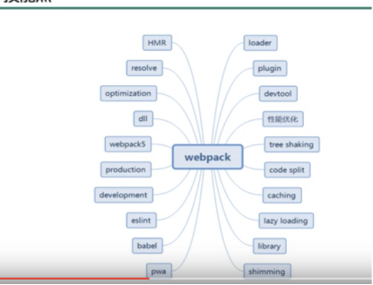
2,webpack 的核心概念
1. entry
指示哪个文件为起点开始打包，构建内部依赖图
2. outpout
打包后的资源bundle输出到哪里，如何命名
3. loader
loader让webpack能够处理那些非javscript文件，
webpack本身只理解javascript
4. Plugins
plugins用来执行更广泛的任务，从打包优化和压缩，一直到重新定义环境中的变量等。
5. Mode
Development mode vs Production Mode.
mode指示webpack启用相应的配置
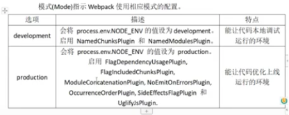
2.1从0开始搭建
npm init 作用：生成package.json, 在其中指定入口文件，一般是main: index.js
npm i webpack webpack-cli -g
npm i webpack webpack-cli -D 作用：-D 意思是development，开发环境
建立 src和build两个目录，
在src下建立index.js文件。
开发环境：webpack ./src/index.js -o ./build/ --mode=development
production environment: webpack ./src/index.js -o ./build/ --mode=production
以index.js为入口文件打包，输出到 ./build/main.js
运行 node ./build/main.js
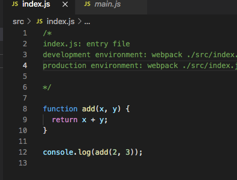
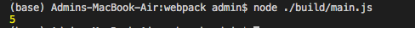
在build目录下，index.html文件中放入编译后的js文件main.js
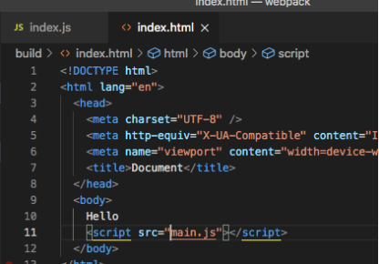
运行browser来验证
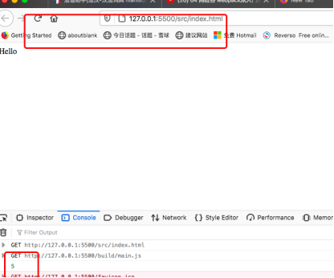
2.2 web.config.js
根目录下的web.config.js
构建工具都是基于node.js平台运行的，用commonJS，语法是
module.exports = xxxx;
const xxx= require(‘\xxx’)
不是ES6的export, import了
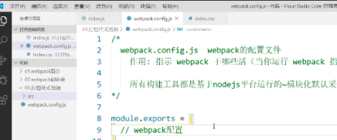
3.路径
webpack.config.js 文件放在根目录下，输出路径用以下resolve配置后，就到了./build下。
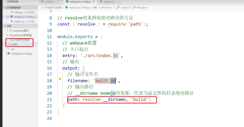
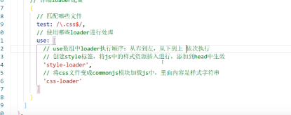
uss数组的执行顺序：先执行css-loader，再执行style-loader
.less文件需要 less less-loader这两个包
html 文件, html-webpack-plugin 包
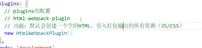
如果只使用一个处理器，那么不需要use:[ ]模式，直接loader: ‘url-loader’,
注意：表面上只有一个包，实际上url-loader使用了file-loader。所以我们需要同时安装这两个包, npm i file-loader url-loader -D,
但是这种方式处理不了html中的图片(<img src=”/xxx.jpg” />)，虽然可以处理作为background的图片，需要再另外列出html-loader, html-loader把htm文件中的img导出
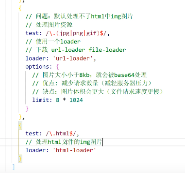
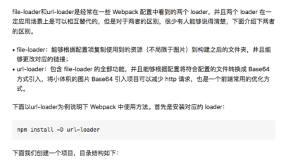
use: [{
loader:'url-loader',
options:{
limit:8192,//限制打包图片的大小：
//如果大于或等于8192Byte，则按照相应的文件名和路径打包图片；如果小于8192Byte，则将图片转成base64格式的字符串。
name:'images/[name]-[hash:8].[ext]',//images:图片打包的文件夹；
//[name].[ext]：设定图片按照本来的文件名和扩展名打包，不用进行额外编码
//[hash:8]：一个项目中如果两个文件夹中的图片重名，打包图片就会被覆盖，加上hash值的前八位作为图片名，可以避免重名。
}
}]}
2.2.1 打包其他资源，就是html/css/等以外的资源，用
exclude: /\.(css|js|html|less)/,
loader: ‘file-loader’
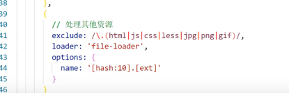
2.2.2 devServer ：用来自动化
npx webpack-dev-server 来启动server
webpack-dev-server
contentBase: resolve(__dirname,’build‘），
compress: true，
port: 3000

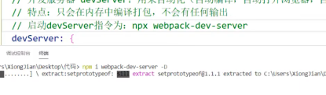
$webpack 有输出到指定的目录
$npx webpack-dev-server， 运行在内存中，没有输出
2.2.3 mini-css-extract-plugin 提取css成一个单独文件
不用这个插件，就是嵌入到js中
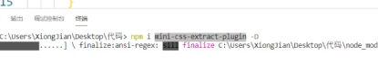
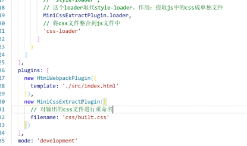
2.2.4 不同浏览器的兼容性处理 postcss-loader postcess-preset-env
默认是生产环境，开发环境，要在webpack.config.js中写明
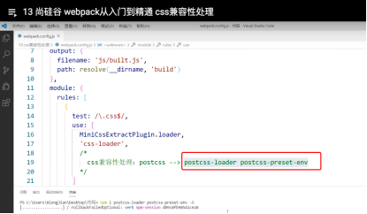
修改package.json，
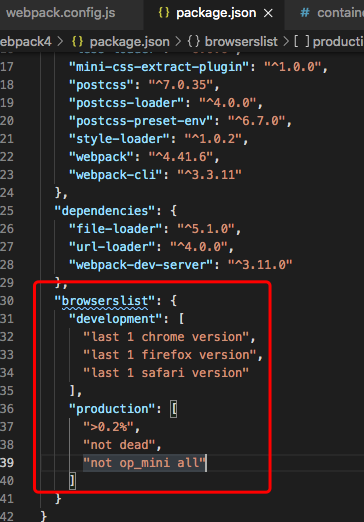
development时, last 1 chrome version 意思是适应最新版本
production: >0.2%， 意义是适应99.8%以上的浏览器，not dead不是已经废弃的，如IE10; not op_mini all这是已经全部废弃的浏览器
github上有browserlist,列出能写哪些参数
也要相应修改webpack.config.js
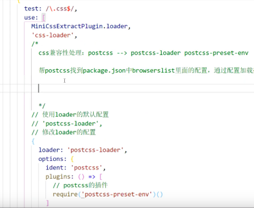
编译结果，显示了对浏览器版本的适应性
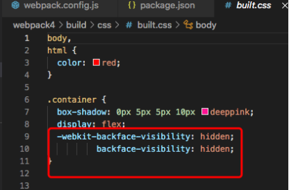
2.2.5 css,js,html压缩
css文件压缩 optimize-css-assets-webpack-plugin
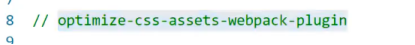
js 压缩
很简单，mode: ‘production’
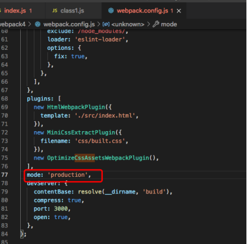
2.2.6 js语法检查
js文件是否有语法错误，编程风格是否同一，编程规则需要到package.json中设置，
然后再到webpack.config.js中设置， eslint, eslint-loader
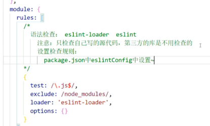
github 的javascript主题
airbnb的编程风格，该如何写js代码l
eslint-config-airbnb-base,
eslint-plugin-import
eslint 这三个库

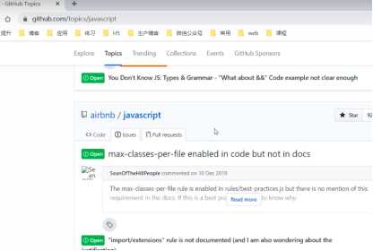
not need check third-party libraries.
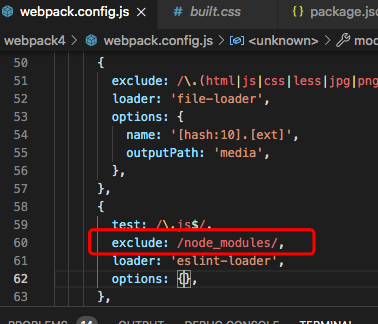
automatically fix
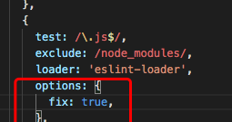
not check this line
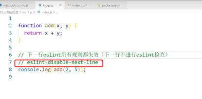
javascrit version compatibility
es6, arrow-function not acceptable for IE 10, babel-loader transform it to common javascript. @babel/core @babel/preset-env
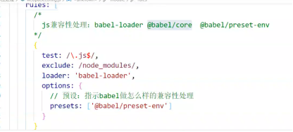
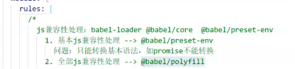
按需加载

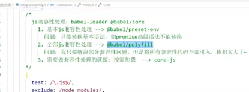
第三种方案，polyfill能做全部的兼容性处理，但是比较大，需要core-js来按需导入
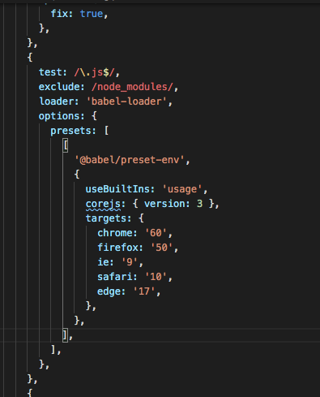
@babel/polyfill need not in webpack.config.js , we import it in index.js

corejs only load the files needed, not make bundle too big.
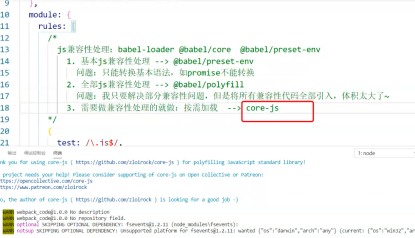
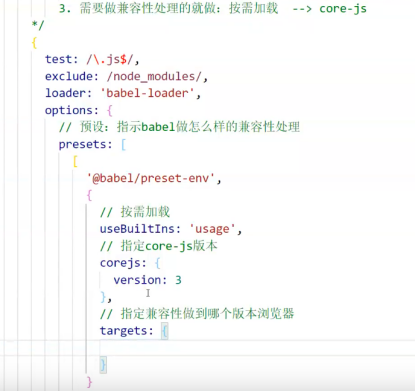
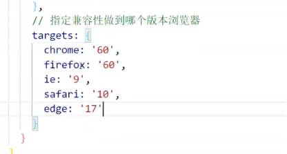
多个包，有先后执行顺序，enforce为pre的先执行
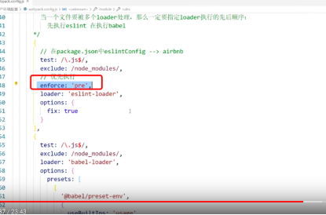
js,html become 压缩，
minify.
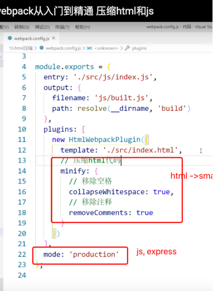
mode: production, 会压缩js
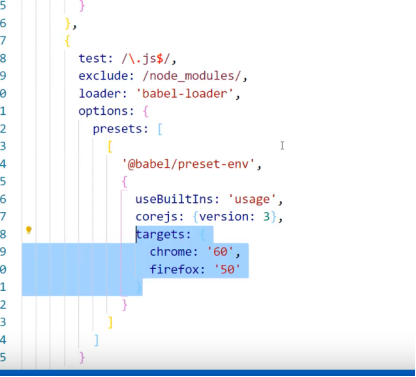
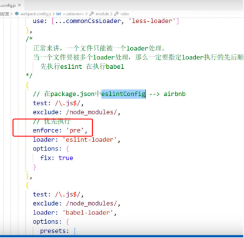
3性能优化
3.1 开发环境优化HMR
打包速度
运行速度，只打包单个发生了变化的文件
// 开发：CSS : style-loader内部实现了HMR，能让打包速度更快
// js文件：默认不能使用HMR功能,后面有补充module.hot，
// html：默认不能使用HMR，会导致不能热更新
// 解决html的方法:修改entry入口，
// 从 entry:'./src/js/index.js' 变成
// entry:['./src/js/index.js','./src/js/index.html']
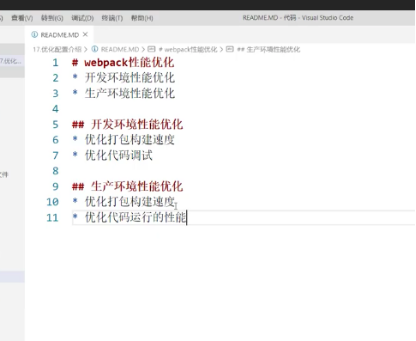
html:只有一个index.html，不需要设置HMR(hot module replacement)
js, css都有多个，需要，开启HMR后，只打包这一个模块
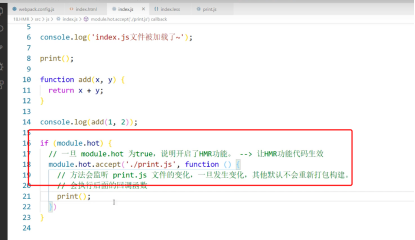
index.js 中加入 module.hot
import async1 from './class2';
function add(x, y) {
return x + y;
}
// eslint-disable-next-line
console.log('hi,add', add(1, 2));
async1();
if (module.hot) {
module.hot.accept('./class2.js', () => {
async1();
});
}
html文件不能更新了。只针对非入库的js文件做热替换HMR处理
因为入口文件是引入其他文件，一旦修改，所有文件都要重新打包，无法避免
js的HMR功能是这样的：比如index。js文件中,
print();
if(module.hot) {
// 一旦为true，说明开启了HRM功能
// 如果不加，一个js变化，所有模块重新构建
module.hot.accpt(‘./print.js’,function(){
// 该方法会监听print.js 文件的变化，一旦发生变化，其他默认不会重新打包
// 会执行后面的回调函数
print();
});
3.2 生产/开发都可用 source-map
多个js打包成1个js, 通过source-map来定位源代码
源代码到构建后的代码的技术
hot为true，开启HMR功能
devtool:’source-map’就会多出一个文件，built.js , built.js.map
source-map有好多种
source-map： 能提供源代码的错误位置，定位准确
devtool:’inline-source-map’
inline是内联，不会生成外部文件，build速度快, 生成一个source map，
也可以准确定位错误位置
devtool:’hidden-source-map’
能提示错误原因，但是没有错误位置，不能追踪到源代码的错误
hidden-source-map 外部
eval-source-map 内联 ： 每一个文件都生成一个sourcemap
能准确定位，就是在源代码文件后面加一个hash值
nosources-source-map 外部：有错误信息，但是没有源代码，
是为了隐藏源代码，只显示build后的代码
cheap-source-map 外部：错误信息，源代码位置，到行（一行可能有多列代码）
cheap-module-source-map 外部：错误信息，源代码的准确位置
构建速度 eval> inline>cheap
eval-cheap-source-map
eval-source-map
调试友好
source-map
cheap-module-source-map
cheap-source-map
最终开发： eval-source-map 调试找错误好 /eval-cheap-module-map 性能最好
生产：不能内联，文件太大。
cheap速度快。 source-map; cheap-module-source-map
nosource--source-map 全隐藏
hidden-source-map只隐藏源代码
mode: 'production',
devServer: {
contentBase: resolve(__dirname, 'build'),
compress: true,
port: 3000,
open: true,
hot: true,
},
devtool: 'source-map',
};
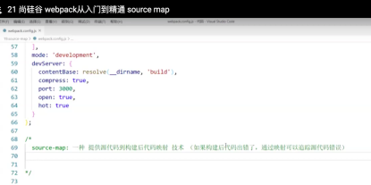
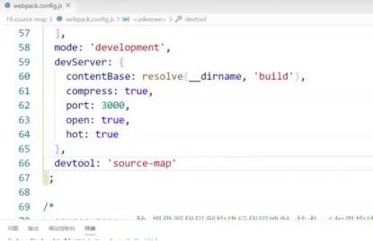
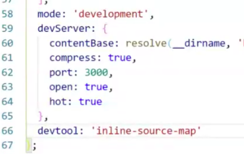
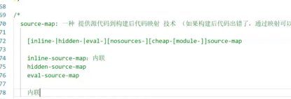
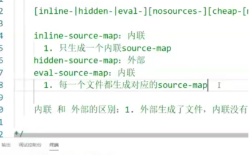
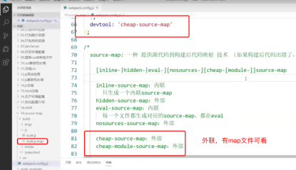
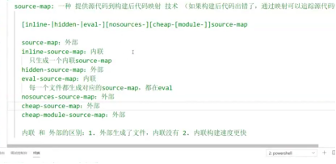
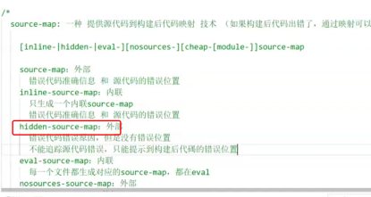
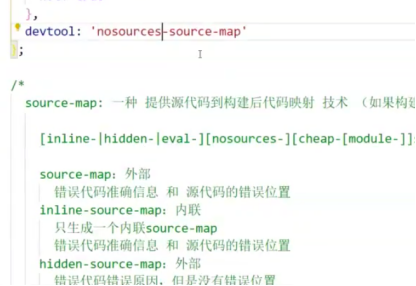
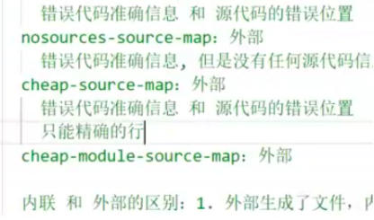
3.3 生产 oneOf
优化生产环境的打包速度的
以下oneOf中loader只能被使用一个，要使用多个怎么办？比如，把代码检查放在oneOf的外面。
module: {
rules: [
{
test: /\.js$/,
exclude: /node_modules/,
enforce: 'pre',
loader: 'eslint-loader',
options: {
fix: true,
},
},
{
oneOf: [
{
test: /\.css$/,
use: [...commonCssLoader],
},

缓存在浏览器端，指定时间，不需要每次刷新都访问服务器，仅仅在js、css、html文件发生变化时，chunkhash比hash更优化，不会导致js\css\html只改了一个文件而全员联动生成新文件，但是因为所有根据入口文件index.js引入的文件，最终生成一个chunk。
所以，css\js还是分不开了最后使用contenthash,文件内容不同就不同。
3.4 缓存：生产环境
只重新打包发生了变化的部分文件
比如开启babel缓存，在第二次构建时，读取缓存，速度会更快
{
test: /\.js$/,
exclude: /node_modules/,
loader: 'babel-loader',
options: {
presets: [
[
'@babel/preset-env',
{
useBuiltIns: 'usage',
corejs: { version: 3 },
targets: {
chrome: '60',
firefox: '50',
ie: '9',
safari: '10',
edge: '17',
},
},
],
],
cacheDirectory: true,
},
},
文件资源缓存
服务器端代码 server.js， 启动服务器node server.js， 访问打包后成果 http://localhost:3000, 缓存1个小时，弊端是文件变了，但是浏览器不刷新，解决方法是给资源名称加版本号，文件名称变了，再刷新缓存就会变。从output的filename是build.js变成build.[hash:10].js。 但是js/css看捆绑一起刷新，因为是一个trunk，最后改成
build.[contenthash:10].js 或者 。。。css.，把js和css分开
module.exports = {
entry: ['./src/index.js', './src/index.html'],
output: {
filename: 'js/build.[hash:10].js',
path: resolve(__dirname, 'build'),
},
css文件也可以加上hash
plugins: [
new HtmlWebpackPlugin({
template: './src/index.html',
minify: {
collapseWhitespace: true,
removeComments: true,
},
}),
new MiniCssExtractPlugin({
filename: 'css/built.[hash:10].css',
}),
3.5 tree shaking 生产环境
去掉没有使用的代码
packae.json中设置 ‘sideEffects’： false 会把css等被js引入的文件删除
"browserslist": {
"development": [
"last 1 chrome version",
"last 1 firefox version",
"last 1 safari version"
],
"production": [
">0.2%",
"not dead",
"not op_mini all"
]
},
"eslintConfig": {
"extends": "airbnb-base"
},
"sideEffects": false
}
继续改良sideEffects,
注意副作用，可能会把直接引入的css或者polyfill文件删除。写到package.json中，这些文件如css，less就不会被tree shaking.
1,xxx
3.6 code split 生产
对react来说，有一个plugin，loadable,有A higher order component for loading components with promises。
把传统打包的1个大文件分成多个文件，加快download速度，也可以事先按需下载
还可以保留原来文件，在编译后也方便区分
但这种方式，一个一个写文件名，不方便，用下面这种方式。
3.6.1 optimization会自动分析，多入口文件中有没有公共依赖。如有，打包成一个。
第三种方式，单独某个文件打包，其他打包在一起
多入口的方式。只要是多入口，肯定是分开打包，
optimization， 把多个文件打包在一起；这样，就很灵活，dll把部分文件单独打包成多个，其他的打包在一起。

3.6.2 entry files and others
entry files有自己的名字，而 其他是按照chunk
module.exports = {
entry: {
polyfill: 'babel-polyfill',
app: './src/index.js'
},
output: {
filename: '[name].bundle.js',
chunkFilename: '[name].bundle.js', //name of non-entry chunk files
path: path.resolve(__dirname, 'dist')
},
module: {
如果动态加载 import(‘....’).then.catch出错，安装babel-eslint，配置.eslintrc.json文件
3.7 lazy loading:
js代码的懒加载，不是指图片
以下代码，只有点击按钮，才会下载test.js文件
指定build后的名字
预加载prefetch在机器性能好时还行，在手机端等会有一些性能问题.正常加载可以认为是并行，而prefetch是利用浏览器空闲时间来下载。 prefetch要慎用。
preloading.
3.8 pwa 离线访问
workbox-webpack-plugin， 有兼容性问题，， serviceworker 只有在服务器中才能看到效果
workboxwebpackplugin.generateSW
plugin中参数作用：1，帮助serviceworker快速启动2，删除之前的旧serviceworker
生成一个配置文件，然后再index.js中注册serviceworker
package.json中browser为true, 那么，index.js中的window,navigator等全局变量才可以使用。
大部分可用
serviceworker， 必须运行在服务器上
npm i serve -g 安装一个本地服务器serve
serve -s build 用serve启动build下的目录
注意大小写
f ('serviceWorker' in navigator) {

3.9 多进程打包
提高打包速度，但是有overhead.
thread-loader
给哪个loader用，就放到哪个loader前面，比如下面放到babel-loader前面,
3.10 externals:
杜绝jquery被打包进来，即使在其他js文件中引入了jquery
externals, npm下的包名
import $ from ‘jquery’;
但是要在html文件中手工引入相应链接，但是不会导致build后的文件变大
3.11 dll: 打包部分文件为dll文件
manifest.json提供映射关系
怎么运行webpack.dill.js呢？ 运行webpack时指定
add-asset-webpack-plugin:
把某个文件打包出去，在html中自动引入
webpack.config.js中加入 webpack.DllReferencePlugin，就不会重新再打包jquery,
那么，使用 add-asset-html-webpack-plugin 插件来引入某个文件，并输出出去，比如，把dll目录下打包好的jQuery抽出成独立文件jquery.js ,再引入到html文件中，就是加入
<script src=”jquery.js”></script>
综合：比如jquery 1，不打包，在html中手工加引入链接 2，单独打包，自动引入，不需要访问其他服务器，
dll实用举例，比如把react系列3个文件单独打成1个包
dll 打包到哪里？一般是window上
3.12 resolve
用变量代替路径，方便路径寻找
省略文件扩展名，比如下列，index.js中import是没写扩展名，会自动从extensions配置中寻找
webpack-dev-server: 仅仅用于开发环境，
npx webpack-dev-server 来运行